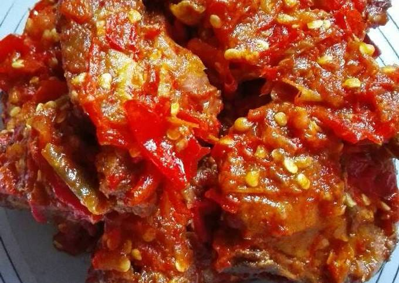

Informasi Pribadi
| Umur |
: |
16 Tahun |
| Nama |
: |
Rajif |
| Tanggal Lahir |
: |
19/07/2008 |
Hobi
Berenang
Salah satu kegiatan yang termasuk menjadi hobi saya, yaitu berenang, karena selain menyehatkan berenang juga menyenangkan. Saya juga menjadikan berenang sebagai hobi karena saat kecil saya dipaksa ikut les berenang, awal nya saya menolak karena lumayan melelahkan, Tapi lama lama saya menjadi terbiasa dan mulai menyukai berenang dan menjadikan berenang sebagai hobi.
Pelajaran Favorit
Bahasa Inggris
saya menyukai pelajarn bahasa inggris dikarenakan, menurut saya bahasa inggirs merupakan salah satu peajaran yang paling mudah dimengerti bagi sebagian orang termasuk saya, mungkin karena dari kecil saya juga sudah sering melihat konten di internet yang menggunakan bahasa inggris dan membaca subtitle nya. Oleh karena itu lah saya menyukai dan menjadikan pelajaran Bahasa Inggris sebagai mata pelajaran favorit.
Makanan Favorit
Ayam Sambal

Ayam Sambal, merupakan salah satu dari makanan enak di Indonesia yang menjadi salah satu makanan favorit saya. Saya suka sekali dengan ayam sambal karena saya lumayan menggemari makanan yang pedas seperti sambal, apalagi sambalnya digabung dan dimasak bersamaan dengn ayam. Walah cik enak banget lo ya.